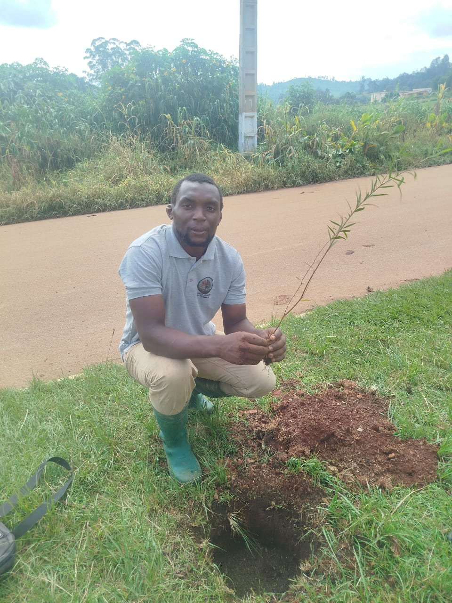
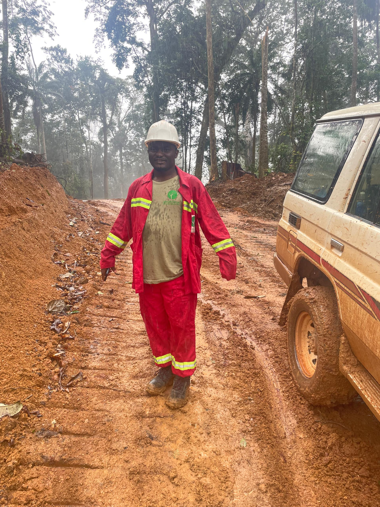
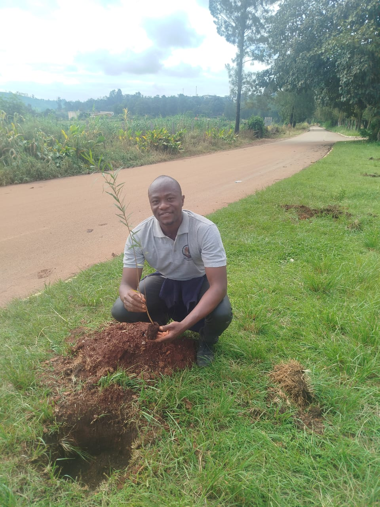

Déployer des grilles d'évaluation scientifique et des techniques agroécologiques novatrices pour régénérer les écosystèmes fragiles, freiner la dégradation des sols et soutenir les exploitations familiales.
Un continent africain où chaque hectare dégradé retrouve sa vitalité écologique et économique, créant un rempart naturel contre les bouleversements climatiques.
Ancrés au cœur de l'Ouest-Cameroun à Dschang, nous portons nos initiatives et nos résultats sur les scènes internationales, notamment à la COP17 sur la biodiversité.
Conformément à notre déclaration officielle, l'association Ecosolutions Worldwide s'engage à :
Découvrez les membres fondateurs qui dirigent les actions d'Ecosolutions Worldwide :

Président
Ingenieur en Gestion conservaroire et restauration des écosystèmes tropicaux

Vice-Président
Dr en Ecologie forestière

Secrétaire Général
Consultant
Secrétaire Général Adjoint
Ingenieur en Production Végétale
Trésorier
Chargé de la faune
19 – 30 Octobre | Yerevan, Arménie
Écosolutions Worldwide portera la voix des initiatives locales de restauration forestière et partagera ses grilles d'évaluation scientifique au plus haut sommet pour la nature.